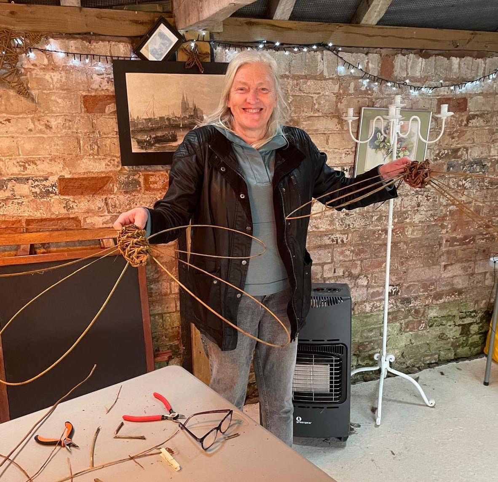

Fused glass artist · nature, colour and a sense of fun

I was introduced to the world of creativity when I was given a compendium of crafts as a child. This has led to a lifelong interest and exploration of various artistic endeavours over the years. A few years ago, I bought a small kiln and started experimenting with fused glass, having only ever tried stained glass before.
My current explorations are inspired by nature and my surroundings and I try to incorporate bright colours and whimsical characters to add a sense of fun to my work.
The glass I fuse is suitable for either the home or garden. I have takeaway DIY kits and I’m open to commissions.